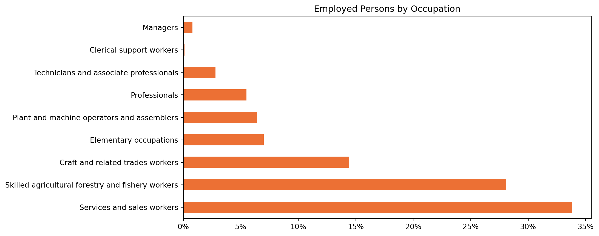

Please note: the following text and data are drawn from p.26 of the Nigeria Labour Force Survey Annual Report 2023 published by the NBS.
The International Standard Classification of Occupations (ISCO) is a system developed by the International Labour Organisation (ILO) to classify and categorize occupations worldwide. It provides a standardized framework for organizing and comparing information about occupations across different countries and regions.
| Employed Persons by Occupation | |
|---|---|
| % | |
| Services and sales workers | 33.8 |
| Skilled agricultural forestry and fishery workers | 28.1 |
| Craft and related trades workers | 14.4 |
| Elementary occupations | 7.0 |
| Plant and machine operators and assemblers | 6.4 |
| Professionals | 5.5 |
| Technicians and associate professionals | 2.8 |
| Clerical support workers | 0.1 |
| Managers | 0.8 |
| Source: Nigeria Labour Force Survey, 2023 | |